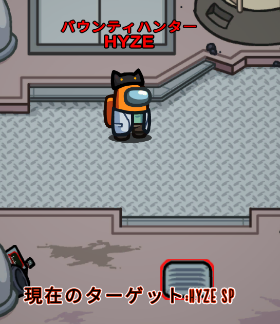

このページでは、アモアスの追加役職をMODごとに説明します。
TownofHost
置き換え先が同じ役職は同時に設定できません(バージョン1.4からは置き換え式ではなくなりこの問題は解消されます)。
-
狂人(Madmate)
エンジニアを置き換え。インポスター陣営。インポスターの勝利のために行動するクルーメイト。
-
てるてる(Jester)
科学者を置き換え。第三陣営。会議で吊られたらその時点で単独勝利。
-
吸血鬼(Vampire)
インポスターを置き換え。インポスター陣営。キルボタンを押した10秒後に遅延してキルが発生する。ただし、相手がベイトだった場合は普通にキルしてしまう。
-
ベイト(Bait)
科学者を置き換え。クルー陣営。ベイトをキルしたインポスターに強制的にセルフレポートさせる。
-
テロリスト(Terrorist)
エンジニアを置き換え。第三陣営。タスクをすべて完了させてから何らかの要因で死亡すると勝利。ベントが使える。
-
相棒(Sidekick)
シェイプシフターを置き換え。ベント、サボ、変身ができ、キルができない。サイドキック以外のインポスターが全滅するとキル能力が解禁される。v1.4b#4時点では廃止されている。
v1.4b#4で実装されている役職
更新時点での最新版、バージョン1.4ベータ#4で実装されている役職です。β版なので正式版と比べてバグが発生する可能性が高いこと、開発者に迷惑がかかるのでバグなどに関する愚痴を書き込んだりしないことを理解した上で使用。-
バウンティハンター(BountyHunter)
ターゲットが設定され、そのターゲットをキルすると直後のキルクールが短くなる。

TheOtherRolesGM
ここでは主なもののみ説明します。載っていない役職はこちらを探すと説明があります。
インポスター陣営
-
バウンティハンター(Bounty Hunter)
一定時間ごとにターゲットが設定され、そのターゲットをキルするとその後のキルクールが非常に短くなる。
-
モーフィング(Morphling)
近くにいる人をスキャンし、その対象に変身することができる。
-
トリックスター(Trickster)
びっくり箱を好きな場所に3つ置くことができる。3つ置き切ると、箱は全員から見えるようになり、互いに接続されたベントとして使用できるようになる。さらに、3つの箱を置き終えた後のトリックスターは強制的に停電を起こすことができるようになる。
-
ヴァンパイア(Vampire)
時間差キルができる。ヴァンパイアが湧く可能性がある場合、すべてのプレイヤーは1つニンニクを置くことができ、置かれたニンニクの周辺では通常キルしかできなくなる。
-
ウォーロック(Warlock)
他のプレイヤーを呪うことができ、呪ったプレイヤーの近くにいる人をキルできる。呪殺を行ったウォーロックは一定時間硬直してしまう。通常キルも行うことができ、呪殺と通常キルはクールタイムが共有される。
-
魔女(Witch)
他のプレイヤーを呪うことができ、呪ったプレイヤーは次の会議の後に死亡する。会議中、呪われたプレイヤーには全員が確認できる印が付く。オプション設定で、魔女が死亡したり、ゲッサーに撃たれたり、会議で吊られた場合に呪われたプレイヤーが死亡するかどうかを選べる。
-
ニンジャ(Ninja)
透明化できる。透明化状態では、移動速度が上昇する。透明化を使用すると、ペナルティとしてキルクールタイムが発生する。
-
シリアルキラー(Serial Killer)
キルクールが短いが、一度キルを行った後、設定した時間が経過するまでにキルを行えなかった場合、自分が死亡してしまう。
-
ネコカボチャ(Neko-Kabocha)
シェリフやジャッカルなどに殺害された場合、自分を殺害したシェリフやジャッカルなどを道連れにする。
-
マフィア(Mafia) - 三人組で構成される特殊なインポスター
-
ゴッドファーザー(Godfather)
普通のインポスターのようにキルができる。
-
マフィオソ(Mafioso)
はじめはキルができないが、ゴッドファーザーが死亡するとキル能力を獲得する。
-
ジャニター(Janitor)
キル能力はないが、死体を掃除して消すことができる。
-
ゴッドファーザー(Godfather)
-
マッドメイト(Madmate)
クルーロールとして設定が必要。インポスターのために行動するクルーメイト。停電(設定によってはコミュサボも)を直せない。
クルー陣営
-
シェリフ(Sheriff)
人外をキルできる。キルした対象にメディックのシールドが張られていた場合、誰も死亡しない。成人前のイビルミニは撃つことができず、自爆する。
-
メイヤー(Mayor)
他のプレイヤーよりも多い票数を持つ。
-
ベイト(Bait)
キルされると強制的にセルフレポートさせる。ベントの中に人がいるかどうかがわかる。
-
ライター(Lighter)
ライトをオンにすると、自分の視界が広がる。
-
スニッチ(Snitch)
タスクを全て完了すると、インポスターを示す矢印が見えるようになる。しかし、スニッチのタスク残量が少なくなると、同じようにインポスターからスニッチを示す矢印が見えるようになってしまう。
-
エンジニア(Engineer)
ベントを使用できる。生きている間、設定した回数だけサボタージュを遠隔で一発修理できる。エンジニアがベントに入っている間、インポスターとジャッカルには全てのベントが青く見える。
-
メディック(Medic)
ゲームごとに1人のプレイヤーにシールドを付与でき、メディックが死亡するとシールドも消える。ラバーズの後追いはシールドを貫通する。また、自身がレポートした死体がどのくらい前に死んだか知ることができる。
-
占い師(Fortune Teller)
はじめは自身が占い師である自覚はなく、クルーメイトとして表示される。設定したタスクを完了すると、自身が占い師であることを自覚し、能力を得る。能力を得ると会議ボタンが押せなくなる。占いは、一定時間近くにいたプレイヤーか、既に死亡したプレイヤーに対して行える。占いを行うと、インポスターに占い師を示す矢印が表示されてしまう。背徳者を占うと、背徳者は通知を受け取る。妖狐を占うと呪殺できる。
-
ミーディアム(Medium)
死体が発見された会議の次のターンのみ、その死体が死亡した場所で、死亡したプレイヤーの魂に質問を行える。質問の答えは、次の会議でチャット欄に送信される。質問は以下からランダムに選ばれる。
- あなたの役職は？
- あなたを殺害したプレイヤーの体の色は？(明るい/暗い)
- あなたはいつ死んだ？
- あなたを殺害したプレイヤーの役職は？
-
タイムマスター(Time Master)
タイムシールドを張っている間にキルされると、キルは発生せず、全プレイヤーの時間を巻き戻す。
-
スパイ(Spy)
インポスターからは、スパイはインポスターであるように見え、本物のインポスターと見分けがつかない。設定によって、インポスターはスパイをキルできないか、もしくはスパイも本物のインポスターもキルできる。
両方に出現
-
ミニ(Mini)
全プレイヤーに小さいキャラクターで表示される。時間経過で成長し、成人すると他のプレイヤーと同じような見た目になる。シェリフが成人前のミニを撃つと、イビルかナイスかに関係なく自爆する。
-
イビルミニ(Evil Mini): インポスターのミニ
成人するまでは、通常インポスターの2倍のキルクールを持つ。成人すると、キルクールが逆に通常の2/3になる。
-
ナイスミニ(Nice Mini): クルーメイトのミニ
成人前に追放されると、その時点で全員が負ける。
-
イビルミニ(Evil Mini): インポスターのミニ
-
ゲッサー(Guesser)
会議中に役職を推測することで、その場で対象を殺害できる。推測を間違えた場合、その場で自爆する。陣営だけでなく正確な役職まで当てなければならない。
- イビルゲッサー(Evil Guesser): インポスターのゲッサー
- ナイスゲッサー(Nice Guesser): クルーメイトのゲッサー
-
スワッパー(Swapper)
会議中に、指定した2人に対して投じられた票を入れ替えることができる。
- イビルスワッパー(Evil Swapper): インポスターのスワッパー
- ナイススワッパー(Nice Swapper): クルーメイトのスワッパー
第三陣営
-
ジャッカル(Jackal)
キルができる第三陣営。インポスターもしくはクルーメイトが全滅しても、ジャッカルが残っていた場合ゲームは続行される。設定によって、ジャッカルはサイドキックを作成できる。インポスターがおらず、かつサイドキックも含めたジャッカル陣営がクルーメイトと同数になると勝利。
-
サイドキック(Sidekick)
ジャッカルが死亡するとジャッカルに昇格する。設定によっては、昇格後さらにサイドキックを作れる。
-
サイドキック(Sidekick)
-
ラバーズ(Lovers)
2人組の第三陣営。設定によっては他の役職に重複して割り当てられる(インポスターラバーズ&シェリフラバーズのような組み合わせもあり得るが、相手の役職はわからない)。どちらかが死亡した場合、もう片方も後追いで死亡する。ゲーム終了時に2人とも生存していた場合勝利となる。
-
ジェスター(Jester)
会議で追放されるとその時点で単独勝利する。
-
ヴァルチャー(Vulture)
設定された数の死体を食べると勝利する。
-
妖狐(Fox)
他の第三陣営の単独勝利の場合を除き、タスクを完了し、最後まで生存していた場合単独勝利する。自身をキルできるプレイヤー(インポスター、ジャッカル、シェリフ)の位置が矢印で表示される。透明化でき、透明化中はキルされない。サボタージュを直せない。設定により、自身をキルできるプレイヤーを除く他のプレイヤーを背徳者にすることができる。
-
背徳者(Immoralist)
妖狐が死亡すると自身も死亡する。妖狐の居場所がわかる。自殺ボタンで自殺できる。キルが起きると画面にエフェクトが表示される。
-
背徳者(Immoralist)
-
オポチュニスト(Opportunist)
ゲーム終了時に生きていた場合に追加勝利となる。
-
ペスト医師(Plague Doctor)
自身の生死にかかわらず、生存している全てのプレイヤーに感染させることで勝利する。1人のプレイヤーを感染源にすることで、そのプレイヤーの近くにいるプレイヤーに感染が広がる。さらに、ペスト医師を殺害したプレイヤーは感染してしまう。
-
アーソニスト(Arsonist)
油ボタンを押しながら他のプレイヤーの近くにとどまることで、対象に油を塗ることができる。生存している全てのプレイヤーに油を塗ると、発火させることができ、単独勝利する。